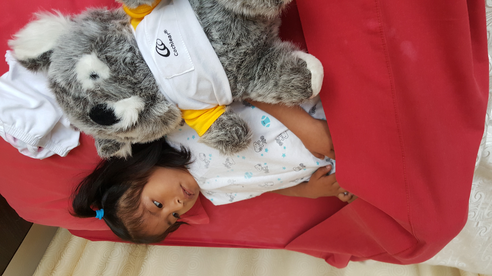
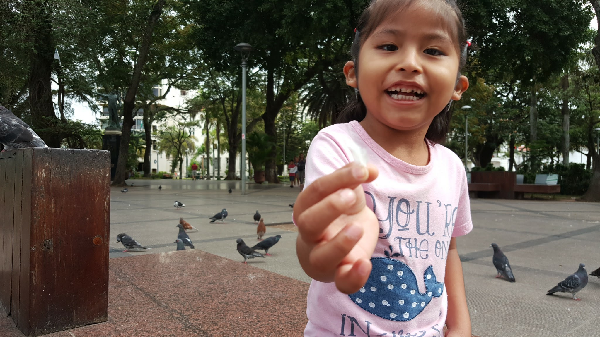
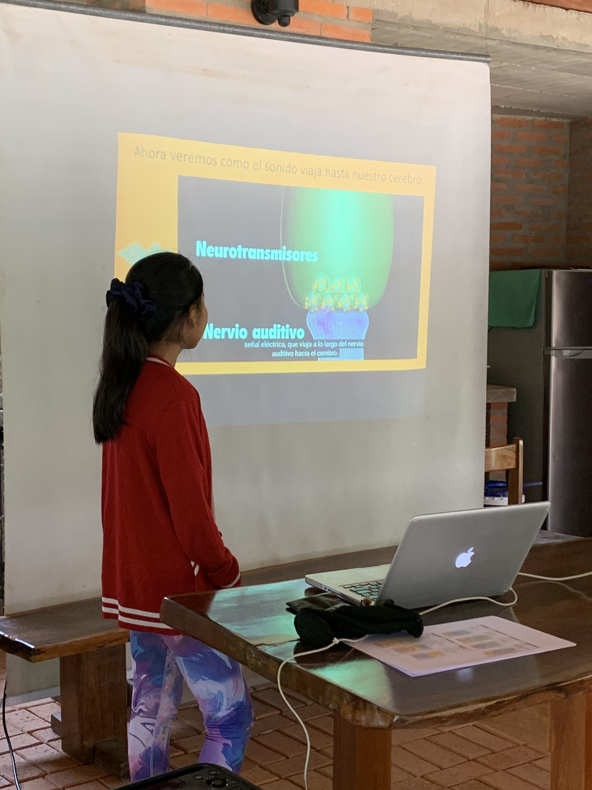

Mi Historia

2013 - El Diagnóstico
Cuando Noelia tenía 2 años, recibimos el diagnóstico: hipoacusia bilateral profunda. Un mundo de silencio se abría ante nosotros, pero también un camino de esperanza. No respondía a estímulos sonoros y los audífonos convencionales no eran una opción. Este momento cambió nuestras vidas para siempre.

2016 - La Cirugía que Cambió Todo
A los 5 años, Noelia recibió sus implantes cocleares bilaterales. Como familia, sabíamos que esta cirugía cambiaría nuestras vidas para siempre. Fue un proceso lleno de esperanza, nervios y fe en que todo saldría bien. Los médicos nos explicaron cada paso del procedimiento.

1 Septiembre 2016 - El Encendido
El encendido fue exitoso. Noelia escuchó por primera vez y comenzó su proceso de adaptación al mundo sonoro. Para nosotros, esta fecha se convirtió en su segundo cumpleaños, una celebración familiar que nunca olvidaremos. Ver su rostro cuando escuchó nuestras voces fue indescriptible. Por eso elegimos el 1 de septiembre de 2025 como nuestra meta especial.

2016-2024 - Creciendo Juntos
Con acceso al lenguaje oral y escolarización regular en Jopoi, Noelia ha requerido apoyo constante: terapia fonoaudiológica, apoyo psicopedagógico y maestra integradora. Como familia, invertimos 70% de nuestros ingresos en sus necesidades, pero cada sacrificio vale la pena al verla crecer y desarrollarse.

Septiembre 2024 - El Taller de Noelia
Noelia presentó en la escuela Jopoi cómo funciona su implante coclear, mostrando con claridad y confianza lo que ha significado en su vida. Ver su seguridad y determinación me llenó de orgullo y me motivó a iniciar esta campaña. Ella misma se había convertido en una defensora de la inclusión.

Junio 2025 - La Situación Actual
"Papá, no puedo escuchar" - esas palabras me rompieron el corazón. Después de 8+ años de uso constante, solo tiene 1 procesador funcional. Si falla, su mundo vuelve al silencio. El 14 de junio decidí hacer pública nuestra situación y pedir ayuda. No podemos permitir que Noelia vuelva al silencio.
Descubriendo el Implante Coclear.
⚠️ El Deterioro de los Procesadores
Después de 8+ años de uso continuo, los procesadores de Noelia muestran signos críticos de deterioro que comprometen su audición.
Batería Degradada
La duración de la batería se ha reducido drásticamente, requiriendo cambios frecuentes
Pérdida de Calidad
El sonido se distorsiona y la claridad auditiva disminuye progresivamente
Fallo Inminente
Solo tiene 1 procesador funcional. Si falla, Noelia vuelve al silencio total
üö® Situaci√≥n Cr√≠tica
Los procesadores de sonido son la única esperanza para que Noelia mantenga su conexión con el mundo sonoro. Tu apoyo es crucial para que ella pueda seguir escuchando a nosotros.
"Los límites de mi lenguaje son los límites de mi mundo"